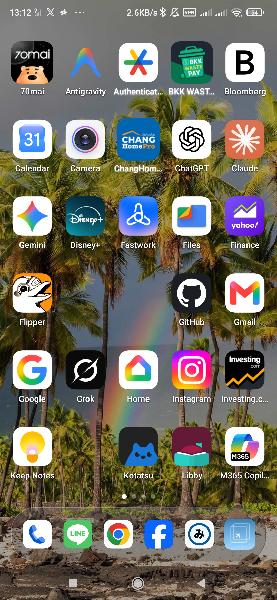
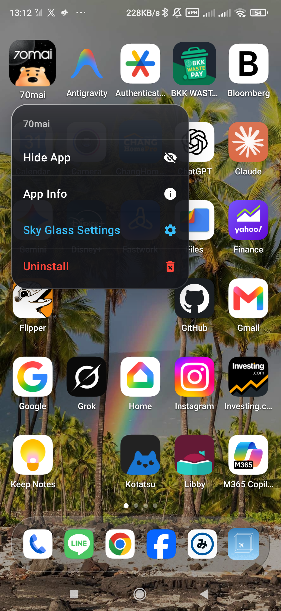
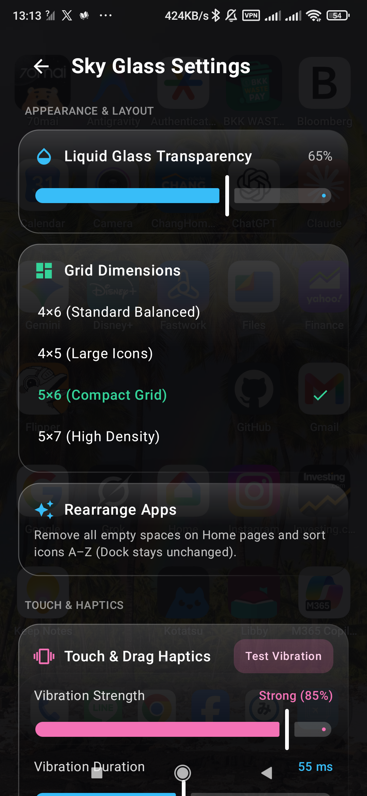

Sky Glass Launcher
Fluid Liquid Glass home screen — fast, zero ads, no INTERNET permission, and completely local on your device.
APK Verification & Specs
ข้อมูลไฟล์ APK และการตรวจสอบความแท้
Package ID
com.ly.skyglassVersion / Requirements
v1.0.1 (4) • Android 11+ (API 30)
Permissions Policy
No
INTERNET permission • Ad-FreeAPK File SHA-256 (SkyGlass-Launcher-v1.0.1.apk)
c86903786afff3ac9347e890b3cfd9f79ee3fba2ce846c3ead852da63c2cb216
Signing Certificate SHA-256
88:93:FD:FA:C3:98:7F:E3:A5:B5:34:0F:54:52:59:B3:61:BE:02:6A:83:F7:BD:6A:54:24:9D:59:2C:B5:41:6E
Setup & User Guide
คู่มือการติดตั้งและการใช้งาน
1. Install the APK
- Tap Download APK above to save
SkyGlass-Launcher-v1.0.1.apk. - Open the downloaded file and allow Install unknown apps for your browser or file manager.
- Verify the SHA-256 hash above if you want extra peace of mind.
2. Set as Default Launcher (Important)
- Open Sky Glass, long-press empty wallpaper → Sky Glass Settings → tap Set as Default Launcher.
- Select Sky Glass as your Home app.
- Xiaomi / MIUI users: If prompted, also confirm in Settings → Home screen → Default launcher so pressing Home always stays in Sky Glass.
3. Core Gestures & Features
- Swipe down anywhere: Spotlight Search + instant inline calculator (e.g.
1280*1.07/2). - Swipe past last Home page: Smart App Library categorized offline on-device.
- Long-press app icon: Drag/Jiggle edit mode, Hide App, App Info, Settings, Uninstall.
- Settings → Rearrange Apps: Removes empty gaps and sorts Home pages A–Z while keeping your Dock intact.
4. Updating to New Versions
- Download the newest APK signed with the same certificate and install directly over the old version (your layout stays intact).
- Auto-update tip: Add
https://github.com/zotix/skyglass-publicinside Obtainium to get update alerts automatically.
Note on Google Play Protect: Because this APK is distributed directly outside Play Store, Play Protect may offer a quick one-time scan when installing. The app uses zero
INTERNET permission and contains zero tracking SDKs.
Screenshots
ภาพตัวอย่างหน้าจอ



What's New in v1.0.1 & Support
บันทึกเวอร์ชัน v1.0.1 และช่องทางติดต่อ
- Streamlined Liquid Glass app & wallpaper popup menus.
- One-tap Rearrange Apps with safety confirmation dialog before grid/sort changes.
- Home button now restores your last visited Home page instead of jumping back to page 1.
- Offline Privacy Policy & direct email feedback inside Settings.